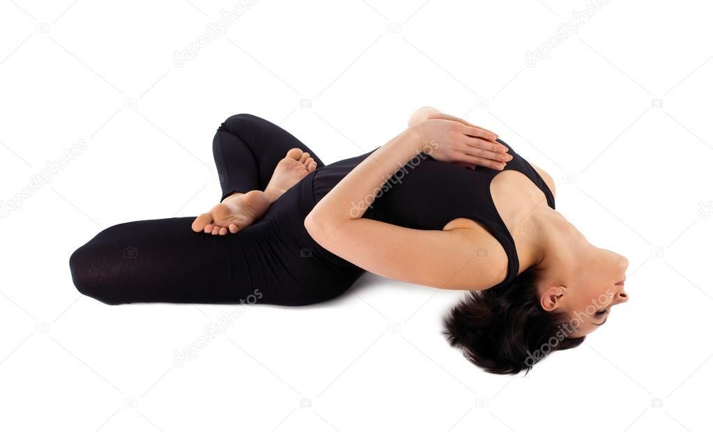
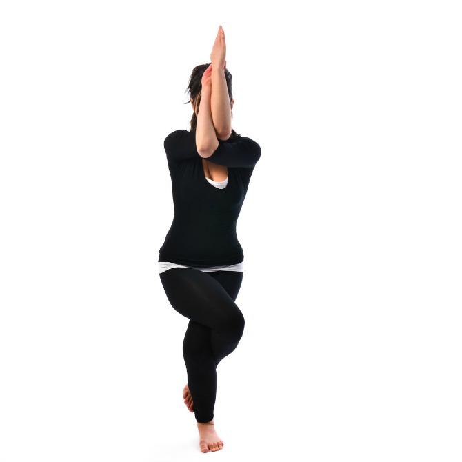

- होम
-
वेन्डर


आयुर्वेद तन, मन और आत्मा के बीच संतुलन बनाकर स्वास्थ्य में सुधार करता है। आयुर्वेद में न केवल उपचार होता है बल्कि यह जीवन जीने का ऐसा तरीका सिखाता है, जिससे जीवन लंबा और खुशहाल होता है। आयुर्वेद के अनुसार शरीर में वात, पित्त और कफ जैसे तीनों मूल तत्वों के संतुलन से कोई भी बीमारी आप तक नहीं आ सकती। लेकिन जब इनका संतुलन बिगड़ता है, तो बीमारी शरीर पर हावी होने लगती है और आयुर्वेद में इन्हीं तीनों तत्वों का संतुलन बनाया जाता है। साथ ही आयुर्वेद में रोग प्रतिरोधक क्षमता विकसित करने पर बल दिया जाता है ताकि किसी भी प्रकार का रोग न हो।
 आयुर्वेद में विभिन्न रोगों के इलाज के लिए हर्बल उपचार, घरेलू उपचार, आयुर्वेदिक दवाओं, आहार संशोधन, मालिश और ध्यान का उपयोग किया जाता है। आयुर्वेद क्या है, आयुर्वेद से विभिन्न रोगों को इलाज कैसे होता है, आयुर्वेद का इस्तेमाल कैसे किया जाता है, त्वचा के लिए आयुर्वेद कैसे काम करता है और आयुर्वेदिक औषधियां कौन-कौन सी हैं, इसके अलावा आयुर्वेद के बारे में संपूर्ण जानकारी के लिए इस केटेगरी को पढ़ें।
आयुर्वेद में विभिन्न रोगों के इलाज के लिए हर्बल उपचार, घरेलू उपचार, आयुर्वेदिक दवाओं, आहार संशोधन, मालिश और ध्यान का उपयोग किया जाता है। आयुर्वेद क्या है, आयुर्वेद से विभिन्न रोगों को इलाज कैसे होता है, आयुर्वेद का इस्तेमाल कैसे किया जाता है, त्वचा के लिए आयुर्वेद कैसे काम करता है और आयुर्वेदिक औषधियां कौन-कौन सी हैं, इसके अलावा आयुर्वेद के बारे में संपूर्ण जानकारी के लिए इस केटेगरी को पढ़ें।
पतंजलि आयुर्वेद ने सबसे पहले औषधियों के निर्माण से शुरुआत की थी। धीरे-धीरे पतंजलि आयुर्वेद खाने-पीने की चीजों से लेकर कांतिवर्धक उत्पादों का निर्माण भी करने लगी है। पतंजलि आयुर्वेद 45 तरह के कांतिवर्धक (cosmetics) उत्पाद बनाती है जिसमें सिर्फ 13 तरह के शरीर साफ़ करने के उत्पाद शामिल हैं, जैसे-शैंपू, साबुन, लिप बाम, स्किन क्रीम आदि। किराना के भी बहुत से उत्पादों का निर्माण पतंजलि आयुर्वेद द्वारा किया जाता है। यह कंपनी 30 अलग-अलग तरह के खाद्य पदार्थ तैयार करती है जैसे- सरसों तेल, आटा, घी, बिस्किट, मसाले, तेल, चीनी, जूस, शहद इत्यादि। दूसरी कंपनियों की तुलना में पतंजलि आयुर्वेद के उत्पाद सस्ते हैं।

एफ.एम.सी.जी. कंपनियों को कड़ी चुनौती देने के लिए पतंजलि आयुर्वेद हाल ही में टीवी पर अपने उत्पादों के विज्ञापन देने शुरू किए हैं। साल 2012 में करीब 150 से 200 के बीच रहने वाली पतंजलि के दुकानों की संख्या बढ़कर 6000 हो चुकी है। इतना ही नहीं पतंजलि आयुर्वेद के तमाम उत्पाद पतंजलि आयुर्वेद की आधिकारिक वेबसाइट पर ऑनलाइन भी बेचे जा रहे हैं।पतंजलि आयुर्वेद का च्यवनप्राश और सरसों का तेल आदि अब रिलायंस के रिटेल स्टोर में भी बिकने लगे हैं। देश भर के 400 स्टोर्स में पतंजलि आयुर्वेद के उत्पाद बिक रहे हैं जिसे 2015 के आखिर तक 1000000 स्टोर्स तक पहुंचाने की योजना है।
आयुर्वेद/Ayurveda एक दवाई या Medicine का System है जिसकी शुरुवातकई वर्षों पहले भारत में हुई थी। Ayurveda Medicines का पूरा रहस्य भारत के इतिहास से जुडा हुआ है। आज के दिन में विश्व भर के ज्यादातर आधुनिक और वैकल्पिक चिकित्सा, आयुर्वेद से लिया गया है। प्राचीन आयुर्वेद चिकित्सा की शुरुवात देवी-देवताओं के ग्रंथों से हुआ था और बाद में यह मानव चिकित्सा तक पहुंचा। सुश्रुत संहिता (Sushruta Samhita) में यह साफ़-साफ लिखा गया है कि धनवंतरी, ने किस प्रकार से वाराणसी के एक पौराणिक राजा के रूप में अवतार लिया और उसके बाद कुछ बुद्धिमान चिकित्सकों और खुद आचार्य सुश्रुत को भी दवाइयों के विषय में ज्ञान दिया।
आयुर्वेद के उपचार में ज्यादातर हर्बल चीजों का उपयोग होता है। ग्रंथों के अनुसार कुछ खनिज और धातु पदार्थ का भी उपयोग औषधि बनाने में किया जाता था। यहाँ तक की प्राचीन आयुर्वेद ग्रांटों से सर्जरी के कुछ तरीके भी सीखे गए हैं जैसे नासिकासंधान (Rhinoplasty), पेरिनिअल लिथोटोमी (Perineal Lithotomy), घावों की सिलाई (Wounds Suturing), आदि। वैसे तो आयुर्वेद के चिकित्सा को वैज्ञानिक तौर पे माना गया है पर इसे वैज्ञानिक तौर पर पालन ना किया जाने वाला चिकित्सा प्रणाली कहा जाता है। पर ऐसे भी बहित सारे शोधकर्ता हैं जो आयुर्वेदिक चिकित्सा को विज्ञानं से जुड़ा (Proto-Science) मानते हैं।
आयुर्वेद का शुरुवात अथर्व वेद से हुआ जो चार वेदों में से एक है जिसमें तरह-तरह के प्राचीन दवाइयों के विषय में जानकारी दी गयी है। यह बात अष्टांग अह्रिदयम Ashtanga Hridayam के प्रथम अध्याय में अयुर्वेदावातारना Ayurveda Vata Rna वग्भाता ने लिखा था जिसका मतलब है आयुर्वेद की उत्त्पति के विषय में बताया गया है। उसमें यह भी बताया गया है कि ब्रह्मा ने ही आयुर्वेद का ज्ञान प्रजापति को दिया।
आयुर्वेद का सही रूप में विकास संहिता दौर में शुरू हुआ जब चरक संहिता लिखा गया। यह आत्रेय और पुनर्वसु ने अपनी कक्षा में बात करते समय का प्रतिलिपि है। यह कहा जाता है चरक संहिता को 6 वे सदी ईसापूर्व में लिखा गया था जिसमे माना जाता है 300-600 ईसापूर्व के मध्य इसमें सर्जरी के विषय में भी लिखा गया था।
- रोग एवं उपचार
- ज्ञानधार
- संपर्क


योगा प्राणायाम
योग ,प्राणायाम के प्रमुख आसन और उनके लाभ
पद्मासन
पद्मासन योग के लाभ
विधि:- टांगें सीधी करके बैठें। बायीं टांग को मोड़ें और बायें पैर को दायीं जांघ पर इस प्रकार रखें कि एडी यथासंभव शरीर के निकट आ जाये। दायीं टांग को मोड़ें और दायें पैर को उसी प्रकार बायीं जांघ पर लायें। > टांगों और कूल्हों के साथ-साथ धड़, बाजू और कंधों को भी ढीला छोड़ दें। > हाथों को घुटनों पर चिन मुद्रा में रखें। आंखें बन्द करें और इस स्थिति में गतिहीन बने रहें। सम्पूर्ण शरीर को तनावमुक्त और श्वास पर एकाग्रचित्त करें।
गोमुखासन
गोमुखासन के लाभ
विधि:- दोनों पैर सामने फैलाकर बैठें। बाएं पैर को मोड़कर एड़ी को दाएं नितम्ब (buttocks) के पास रखें। दायें पैर को मोड़कर बाएं पैर के ऊपर इस प्रकार रखें की दोनों घुटने एक दूसरे के ऊपर हो जाएँ। दायें हाथ को ऊपर उठाकर पीठ की ओर मुडिए तथा बाएं हाथ को पीठ के पीछे नीचे से लाकर दायें हाथ को पकडिये .. गर्दन और कमर सीधी रहे। एक ओ़र से लगभग एक मिनट तक करने के पश्चात दूसरी ओ़र से इसी प्रकार करें।
अर्द्धमत्स्येन्द्रासन
अर्द्धमत्स्येन्द्रासन योग के लाभ
विधि:-दोनों पैर सामने फैलाकर बैठें. बाएं पैर को मोड़कर एडी को नितम्ब के पास लगाएं। बाएं पैर को दायें पैर के घुटने के पास बाहर की ओ़र भूमि पर रखें। बाएं हाथ को दायें घुटने के समीप बाहर की ओ़र सीधा रखते हुए दायें पैर के पंजे को पकडें। दायें हाथ को पीठ के पीछे से घुमाकर पीछे की ओ़र देखें। इसी प्रकार दूसरी ओ़र से इस आसन को करें।
योगमुद्रासन

योगमुद्रासन योग के लाभ
विधि:-दोनों पैर सामने फैलाकर बैठें. बाएं पैर को मोड़कर एडी को नितम्ब के पास लगाएं। बाएं पैर को दायें पैर के घुटने के पास बाहर की ओ़र भूमि पर रखें। बाएं हाथ को दायें घुटने के समीप बाहर की ओ़र सीधा रखते हुए दायें पैर के पंजे को पकडें। दायें हाथ को पीठ के पीछे से घुमाकर पीछे की ओ़र देखें। इसी प्रकार दूसरी ओ़र से इस आसन को करें।
सर्वांगासन
सर्वांगासन योग के लाभ
विधि:-दोनों पैरों को धीरे –धीरे उठाकर 90 अंश तक लाएं. बाहों और कोहनियों की सहायता से शरीर के निचले भाग को इतना ऊपर ले जाएँ की वह कन्धों पर सीधा खड़ा हो जाए। पीठ को हाथों का सहारा दें .. हाथों के सहारे से पीठ को दबाएँ . कंठ से ठुड्ठी लगाकर यथाशक्ति करें। फिर धीरे-धीरे पूर्व अवस्था में पहले पीठ को जमीन से टिकाएं फिर पैरों को भी धीरे-धीरे सीधा करें।
ताड़ासन
ताड़ासन के लाभ
विधि:-इसके लिए सबसे पहले आप खड़े हो जाए और अपने कमर एवं गर्दन को सीधा रखें। अब आप अपने हाथ को सिर के ऊपर करें और सांस लेते हुए धीरे धीरे पुरे शरीर को खींचें। खिंचाव को पैर की अंगुली से लेकर हाथ की अंगुलियों तक महसूस करें। इस अवस्था को कुछ समय के लिए बनाये रखें ओर सांस ले सांस छोड़े। फिर सांस छोड़ते हुए धीरे धीरे अपने हाथ एवं शरीर को पहली अवस्था में लेकर आयें। इस तरह से एक चक्र पूरा हुआ। कम से कम इसे तीन से चार बार प्रैक्टिस करें।
भुजंगासन
भुजंगासन के लाभ
विधि:-पेट के बल लेटें, ठोडी को फर्श पर टिकायें और हथेलियों को फर्श पर शरीर के बराबर बगल की पंक्ति में रखें। पैर फैले रहेंगे। > पूरक करते हुए कूल्हों को फर्श पर दबायें और धड़ को हाथों की सहायता से ऊपर उठायें। सिर को थोड़ा सा पीछे मोड़ें और ऊपर देखें। मेरुदण्ड धनु समान एक-सा तना रहे और कंधों को नीचे व पीछे दबायें। > श्वास रोकते हुए इस स्थिति में जितनी देर सुविधाजनक हो बने रहे > धीरे-धीरे श्वास छोड़ते हुए प्रारम्भिक स्थिति में आ जावें।
धनुरासन
धनुरासन के लाभ
विधि:-पेट के बल लेटें और बाजुओं को शरीर के पास ही रखें। ठोडी फर्श पर टिकी हुई और पैर फर्श पर समतल रहें। > पूरक करते हुए दोनों टांगों को मोड़ें और टखनों को हाथों से पकड़ लें। सिर, धड़ और जांघों को उठायें और ऊपर देखें। शरीर अब एक तने हुए धनुष के समान बन गया है। शरीर का भार पेट पर है। > श्वास को रोकते हुए इसी स्थिति में जब तक सुविधाजनक हो बने रहें। > रेचक करते हुए प्रारम्भिक स्थिति में लौट आयें।
शलभासन
शलभासन के लाभ
विधि:-पीठ के बल लेट कर ठोडी को फर्श पर टिकाएं अथवा, यदि यह ज्यादा आरामदायक लगे तो सिर को पार्श्व में मोड़ें और फर्श पर एक गाल टिका दें। > बाजुओं को पेट के नीचे रखें। हाथों को जांघों के नीचे तथा हथेलियां जमीन की ओर रखें। > पूरक करने के साथ हथेलियों को फर्श पर दबावें, पांवों को सीधा रखें और जितना हो सके ऊपर उठायें। > श्वास रोक कर जब तक आरामदायक हो इस स्थिति में बने रहें। रेचक करते हुए प्रारंभिक स्थिति में आ जायें।
हलासन
हलासन के लाभ
विधि:-पीठ के बल लेटें। बाजू शरीर के पास रहेंगे। हथेलियां ऊपर की ओर इंगित करेंगी। > पूरक करते हुए टांगों, नितम्बों और धड़ को सर्वांगासन की तरह ऊपर उठायें। > रेचक करते हुए टांगों को सीधा रखें और उनको सिर के पीछे नीचे ले आयें। पंजों के पोर फर्श को और ठोडी छाती को छूती है। > सामान्य श्वास के साथ इस मुद्रा में सुविधापूर्वक जितनी देर रह सकें, ठहरें। पूरक करते हुए दोनों टांगों को सर्वांगासन में ऊपर उठायें। > धीरे-धीरे श्वास छोड़ते हुए प्रारम्भिक स्थिति में लौट आयें।
मत्स्यासन
मत्स्यासन के लाभ
विधि:-प्रारंभिक स्थिति में हाथों को शरीर के पीछे फर्श पर रखें। अब धीरे से पीछे झुकें, एक के बाद दूसरी कोहनी को फर्श पर रखें और पीठ को ऐसे महराब बना लें जिससे कि सिर का उच्च भाग फर्श को छू ले। रीढ़ समान रूप से विस्तृत हो गई है। यदि पद्मासन में बैठें हों तो हाथों से पैर की अंगुलियां (पंजे) पकड़ लें, अन्यथा दोनों हथेलियों को छाती के सामने ले आयें। > नाक के माध्यम से पूरक और मुख से रेचक। इसी स्थिति में जितनी देर सुविधा हो बने रहें। सहारे के लिए कोहनियों का इस्तेमाल करते हुए धीरे-धीरे प्रारंभिक स्थिति में लौट आयें।
गरुड़ासन
गरुड़ासनके लाभ
विधि:-दोनों टांगों को इकट्ठा करके खड़े हों। संतुलन बनाये रखने के लिए सामने किसी निश्चित बिन्दु पर ध्यान लगायें। बाजुओं को उठायें, कोहनियों को मोड़ें और दायें बाजू को बायें बाजू के नीचे और घेरे में लें। हथेलियों को इकट्ठी ले आयें। > अपना वजन बायीं टांग पर ले आयें। बायीं टांग को थोड़ा-सा मोड़ें और दायीं टांग को बायीं टांग के सामने की ओर से घेरें। > शरीर के ऊपरी भाग (धड़) को आगे तब तक झुकायें जब तक कि बायीं कोहनी दायें घुटने को न छू ले। पीठ यथा संभव सीधी रहे। > सामान्य श्वास लेते हुए इस स्थिति में कुछ समय तक रहें। प्रारंभिक स्थिति में लौट आयें और इस व्यायाम को दूसरी ओर दोहरायें। जब इस आसन का अभ्यास हो जाये तब इसको आंखें बन्द करके और सन्तुलन पर ध्यान केन्द्रित करके भी किया जा सकता है।
शीर्षासन
शीर्षासन के लाभ
विधि:-वज्रासन में बैठें। हाथ जांघों पर रहें। > सामान्य श्वास लेते हुए सिर को घुटनों के सामने फर्श पर रखें। अंगुलियों को सिर के पीछे जकड़ें और जकड़े हुए हाथों से सिर के पिछले भाग को सहारा दें। बाजुओं के अग्रभाग फर्श पर रखे हुए हैं और कोहनियां सिर के साथ समबाहु त्रिभुज बनाती हैं। > पंजों को नीचे मोड़ें। कूल्हों को उठायें और टांगों को सीधा करें। शरीर के सन्तुलन पर ध्यान दें। पैरों को शरीर के पास लाने के लिए चलायें जिससे नितम्ब सिर के ऊपर तक ऊंचे हो जायें। शरीर के वजन को बाजुओं के अग्रभाग पर ले आयें और पैरों को फर्श से ऊपर उठायें। पीठ सीधी रखते हुए एडियों को नितम्बों की ओर लायें। अन्त में टांगों को पूरी तरह तानकर बिल्कुल सीधा कर लें और पैरों को आराम करने दें। शरीर के भार को बाजू के अग्रभाग, सिर और गर्दन में आराम देते हुए सन्तुलित करें।
चक्रासन
चक्रासन के लाभ
विधि:-बाजुओं को शरीर के पास रखते हुए पीठ के बल लेट जायें। घुटनों को मोड़ें और पैरों को फर्श पर नितम्बों के पास रखें। > बाजुओं को सिर के ऊपर उठायें और फर्श पर कंधों के पास हथेलियों को रख दें। अँगुलियाँ शरीर की ओर होंगी और कोहनियाँ ऊपर की तरफ। > पूरे शरीर को ऐसे ऊँचा उठायें कि केवल हाथ और पैर ही फर्श पर हो। हाथों को पैरों के पास लाने का यत्न करें। फर्श की ओर देखें। > सामान्य श्वास के साथ इसी स्थिति में बने रहें और फिर प्रारम्भिक स्थिति में लौट आयें।
नाड़ी शोधन प्रानायाम

नाड़ी शोधन प्रानायाम के लाभ
विधि:-बिल्कुल तनाव रहित बैठें और कुछ समय तक सामान्य श्वास पर चित्त एकाग्र करें। > फिर दायां हाथ उठाएं, भोहं के केन्द्र में अनामिका और मध्यमा अँगुली को रखें (प्राणायाम मुद्रा) और दायें नथुने को अँगूठे से बंद रखें। > बायें नथुने से बीस बार श्वास लें। श्वास सामान्य से कुछ गहरा और पेट की ओर जाता हो। > दायें नथुने को फिर खोले और बायें नथुने को अनामिका से बंद करें। > दायें नथुने से बीस बार श्वास लें। श्वास सामान्य से थोड़ा गहरा और पेट की ओर जाता हो। > हाथ को घुटनों पर ले आएं और श्वास के सामान्य प्रभाव का निरीक्षण करें।
भस्त्रिका प्राणायाम
भस्त्रिका प्रानायाम के लाभ
विधि:-शरीर का स्थिरीकरण महसूस करें और श्वास के आवागमन का निरीक्षण करें। > हाथों को उठा कर प्राणायाम मुद्रा में ले आयें। > दायें नथुने को अंगूठे से बंद कर लें और पूरक व रेचक, शीघ्रता से एक के बाद एक बायें नथुने से 20 बार करें। पेट धौंकनी की तरह चलता है। > 20वीं श्वास के साथ बायें नथुने से गहरा पूरक और रेचक करें व फिर नथुना बदल लें। दाएं नथुने से धौंकनी-श्वास जारी रखें। > 20वीं श्वास के साथ दायें नथुने से गहरा पूरक करें और रेचक धीमी गति से करें। हाथ घुटने पर वापस ले आयें और इसी व्यायाम को दोनों नथुनों से दोहरायें।
उज्जयी प्राणायाम।
उज्जयी प्रानायाम के लाभ
विधि:-इसमें दोनों नासिकाओं से धीरे धीरे सांस लिया जाता है, सांस को रोका जाता हैं और सांस छोड़ते हुए दाएं नासिका को बंद कर बायीं नासिका से सांस को धीरे धीरे निकाला जाता है> जब दोनों नासिका से सांस लिया जाता है तो गर्दन के थाइरोइड वाले हिस्से को कंपन कराके ध्वनि उत्पन्न की जाती है > यह आवाज ही उज्जयी प्राणायाम को एक अहम स्थान देता है।
कपालभाति प्राणायाम
कपालभाति प्राणायाम के लाभ
विधि:-कपालभाति प्राणायाम की शुरुआत करने के लिए श्वास सामान्य गति से शरीर के अंदर की और लेनी होती है। और तेज़ गति से बाहर निकालनी होती है। यह पूरी प्रक्रिया एक रिद्म में होनी चाहिए। प्रत्येक सेकंड में एक बार पूरी सांस को तेजी के साथ नाक से बाहर छोड़ें, इससे पेट अन्दर चला जाएगा। कपालभाती में प्रत्येक सेकंड में एक बार सांस को तेजी से बाहर छोड़ने के लिए ही प्रयास करना होता है| साँस को छोड़ने के बाद, सांस को बाहर न रोककर बिना प्रयास किये सामान्य रूप से सांस को अन्दर आने दें| प्रत्येक सेकंड में साँस को तेजी से बाहर छोड़ते रहे| इस हिसाब से एक मिनट में सांठ बार और कुल पाँच मिनट में तीनसौ बार आप वायु (सांस) बाहर फैंकनें की क्रिया करें। (थकान महसूस होने पर बीच बीच में रुक कर विश्राम अवश्य लेते रहें)। शुरुआत में अगर एक मिनट में साठ बार सांस बाहर फैंकने में थकान हों, तो एक मिनट में तीस से चालीस बार सांस बाहर निकालें और अभ्यास बढ्ने के साथ साथ गति को प्रति मिनट साठ सांस तक ले जायें। कपालभाति प्राणायाम का अभ्यास लंबे समय तक सही तरीके से करने पर इसकी अवधि पांच मिनट से पंद्रह मिनट तक बढ़ाई जा सकती है। यानी की पांच-पांच मिनट के तीन चरण।
अनुलोम-विलोम प्राणायाम
अनुलोम-विलोम प्राणायाम के लाभ
विधि:-दरी व कंबल स्वच्छ जगह पर बिछाकर उस पर अपनी सुविधानुसार पद्मासन, सिद्धासन, स्वस्तिकासन अथवा सुखासन में बैठ जाएं। फिर अपने दाहिने हाथ के अंगूठे से नासिका के दाएं छिद्र को बंद कर लें और नासिका के बाएं छिद्र से सांस अंदर की ओर भरे और फिर बायीं नासिका को अंगूठे के बगल वाली दो अंगुलियों से बंद कर दें। उसके बाद दाहिनी नासिका से अंगूठे को हटा दें और सांस को बाहर निकालें। अब दायीं नासिका से ही सांस अंदर की ओर भरे और दायीं नाक को बंद करके बायीं नासिका खोलकर सांस को 8 की गिनती में बाहर निकालें। इस क्रिया को पहले 3 मिनट तक और फिर धीरे-धीरे इसका अभ्यास बढ़ाते हुए 10 मिनट तक करें। 10 मिनट से अधिक समय तक इसका अभ्यास नहीं करना चाहिए। इस प्रणायाम को सुबह-सुबह खुली हवा में बैठकर करें।
मूर्छा प्राणायाम

मूर्छा प्राणायाम के लाभ
विधि:-सबसे पहले आप पद्मासन या सिद्धासन में बैठ जाएं। आँखें बंद करें। अब आप सिर को पीछे झुकाएं और धीरे धीरे दोनों नासिका छिद्र से सांस लें। कुम्भक करें और शाम्भवी मुद्रा करते हुए स्थिर रहिये। धीरे धीरे सांस छोड़ते हुए सिर को सीधा करें। यह एक चक्र हुआ। इस तरह से आप 3 से 5 चक्र करें और फिर धीरे धीरे इस के चक्र को बढ़ाते रहें।